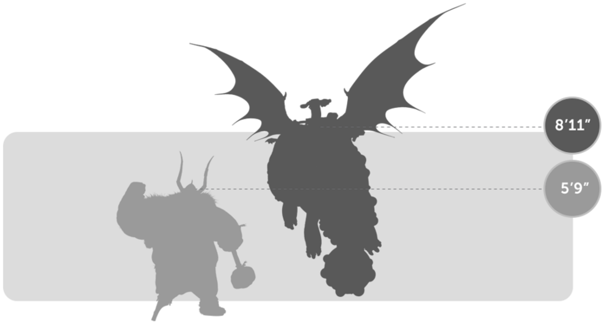
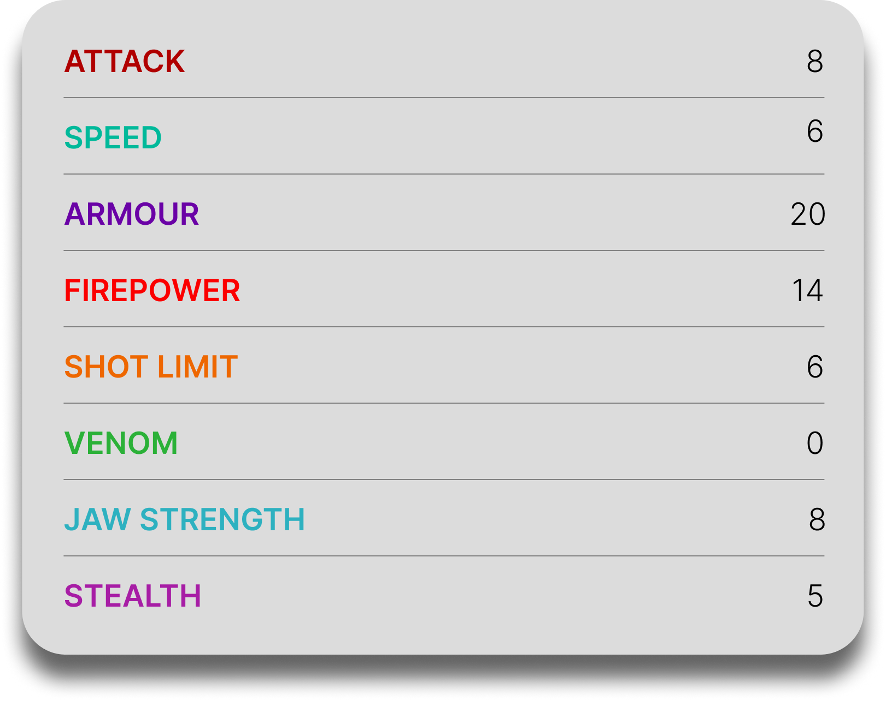

Hotburple
General Overview
The Hotburple is a medium-sized dragon belonging to the Boulder Class. It is a close relative of the Gronckle, sharing a similar bulky body and lava-based abilities. Known for its ability to generate intense heat, the Hotburple can melt rocks more efficiently than its relatives, making it particularly dangerous despite its slow and seemingly clumsy nature.


Physical Appearance
- Body & Color: It has a round, heavy body similar to the Gronckle, but often displays brighter, warmer tones such as orange, red, and yellow due to its heat-producing nature.
- Head & Face: Its face is wide and rugged, with a slightly more intense and fiery expression compared to its relatives.
- Appendages: It has short, sturdy legs and small wings that move rapidly to support its heavy body in flight.
- Wings & Tail: Its wings are compact and fast-beating, while its short tail helps stabilize its movements during hovering and landing.
Abilities and Combat
- Superheated Lava Blast: It melts ingested rocks at extremely high temperatures and launches them as devastating molten projectiles.
- Heat Generation: It can generate and store large amounts of heat, making its attacks hotter and more destructive than those of similar dragons.
- Heavy Armor: Its thick, rock-like skin provides strong resistance against physical attacks.
- Endurance: It can withstand significant damage and continue fighting due to its durability.
- Hover Flight: Its rapidly beating wings allow it to hover in place despite its weight.
- Strength: Its powerful body allows it to carry heavy loads and break through obstacles.
Behavior and Personality
- Intelligence: It has a simple but effective mindset, capable of learning routines and forming bonds with riders.
- Temperament: Hotburples are generally calm and slow-moving, but can become aggressive when threatened.
- Behavior: They prefer resting and feeding rather than engaging in unnecessary combat.
- Social Traits: They are not highly social but can show loyalty toward those they trust.
- Diet: Their diet consists mainly of rocks, which they melt internally to produce their signature lava attacks.